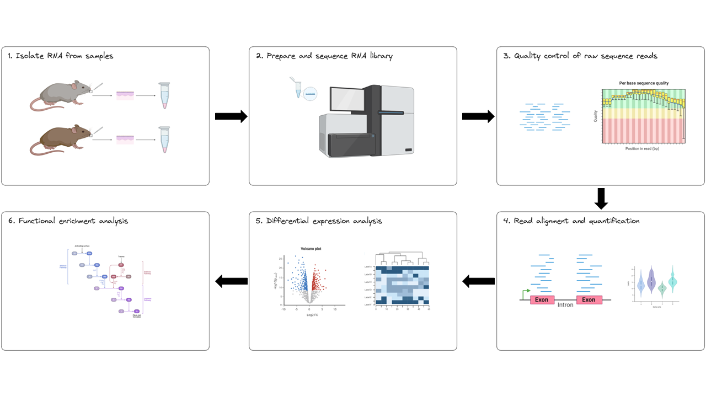
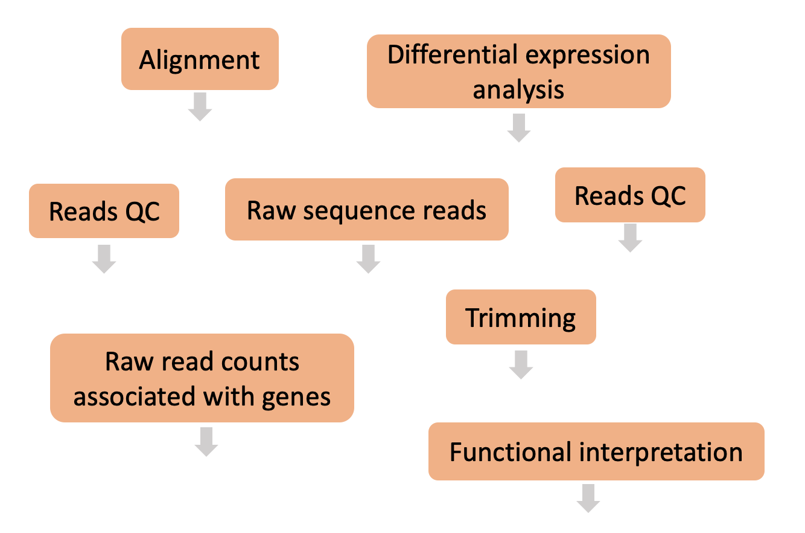
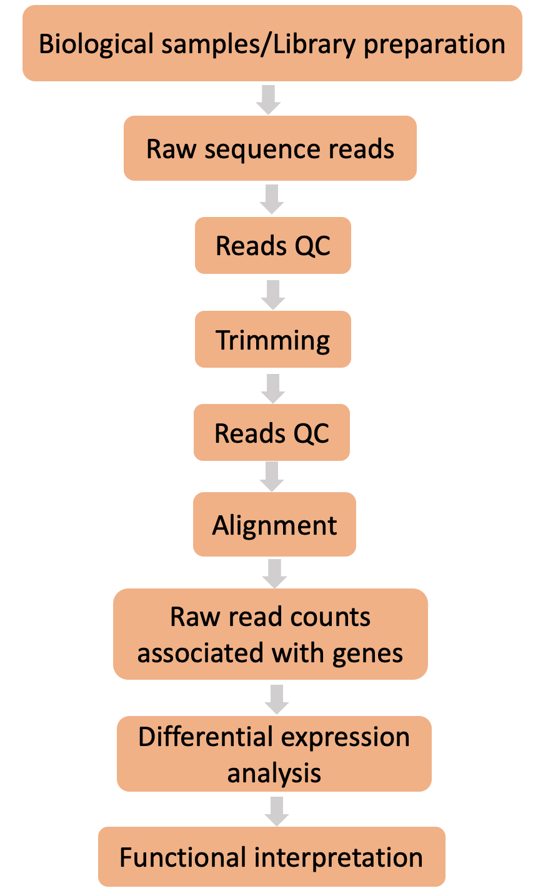
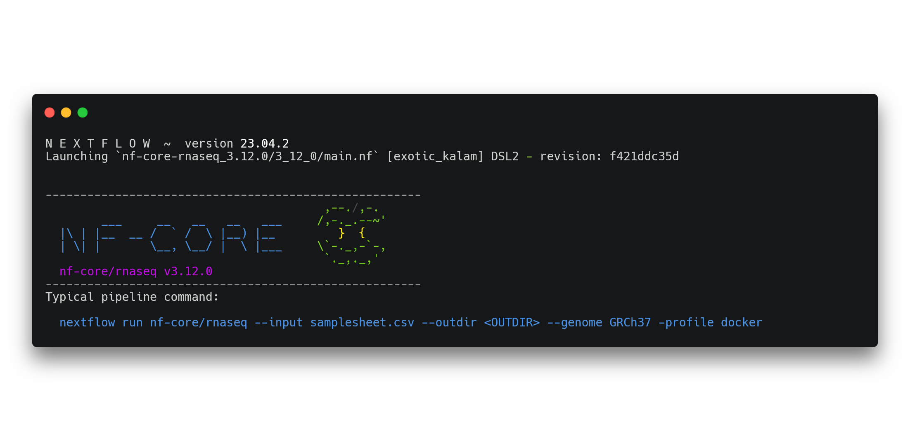

RNAseq data pre-processing workflow
- Understand the basic RNAseq for differential expression data processing and analysis workflow
- Understand why Nextflow and nf-core are good options for reproducible and portable bioinformatics workflows
- Comprehend the nf-core/rnaseq pipeline structure and run command
1.1.1 What is RNAseq?
RNAseq experiments involve the collection of RNA from a tissue of interest, converting this raw biological material to a digitised format using a high-throughput sequencing platform, pre-processing the resulting raw sequence reads so they can then be analysed to identify differentially expressed genes and functional pathways.
Using this technique, we can measure gene expression at the transcriptome level by:
- Capturing a representative sample of mRNA in our samples
- Aligning sequence reads to a reference genome
- Identifying the number of sequence reads that are aligned to each gene
- Applying statistical methods to capture the variance and significance in gene expression levels across different conditions or groups of samples.
This method allows for the identification of upregulated or downregulated genes, giving insights into the biological processes and molecular functions that are active in the tissue being studied. In this workshop, by comparing the expression levels of genes between knock-out and wild type mice, it is possible to identify the molecular mechanisms underlying WBS and potentially discover targets for therapeutic intervention.
1.1.2 RNAseq experimental workflow
The experimental workflow for RNAseq is presented in the image below. It consists of six steps:
- Isolate RNA from samples
- Prepare and sequence the RNA
- Perform quality control of raw sequence reads
- Align sequence reads to a reference genome and count the number of reads mapped to each gene
- Apply statistical methods to capture variance and significance between groups
- Identify which biological processes, components, and functions are over-represented

1.1.3 RNAseq data processing pipelines
In the first session/day of this workshop, we will be performing steps 3 and 4 of the experimental workflow above. We will then analyse our processed data in the second session/day of the workshop, following steps 5 and 6. To process our data on day 1 we will be:
- Working on the command-line interface
- Working with the raw sequence data from the Corley et al. (2016) case study
- Running the nf-core/rnaseq pipeline
Here are all the steps that make up a typical differential expression workflow when we’re working with bulk RNA-seq data. Can you place the steps in the right order?


1.1.4 Introduction to nf-core/rnaseq
nf-core is a community-curated collection of bioinformatics pipelines written in Nextflow. The nf-core community is global, comprising bioinformaticians, computational biologists, software engineers, and biologists. The community works together to develop and maintain best practice bioinformatics pipelines and support others in running them. They’ve also developed a toolkit to assist in pipeline usage and development. Everyone is welcome to join the community!
The nf-core/rnaseq pipeline can be used to analyse RNA sequencing data obtained from organisms with a reference genome and annotated gene dataset. It is flexible and modular, allowing users to choose which processes to run and giving users the choice of different tools for essential steps like read alignment.
Bioinformatics workflows are like wet-lab protocols, they consist of many steps that need to be performed consistently across experiments. And just like wet-lab protocols, things can get very complicated very quickly when we’re working with different numbers of samples, different organisms, and collaborating with other researchers. Just take a look at the image below to see how messy things can get!

What can nf-core/rnaseq do?
The nf-core/rnaseq pipeline is designed to handle data processing steps that can easily be standardised and automated. It is used to process the raw sequence reads and generate read count data that we will be analysing tomorrow. These steps are often the most computationally challenging to perform. Users can run their data through the whole pipeline with one command, or specific stages.
Looking at the nf-core/rnaseq pipeline structure below, we can see that the developers have:
- Organised the workflow into 5 stages based on the type of work that is being done
- Provided a choice of multiple methods and specified defaults
- Provided a choice of tool for some steps

Given Nextflow’s focus on portability and reproducibility, the nf-core/rnaseq pipeline can be run on any compute environment where you can install Nextflow and one of the software management tools like Singularity, Docker, or Conda (among others). Take a look at their installation guide for more details.
Keep in mind that each of the tools the nf-core/rnaseq pipeline uses has its own minimum compute resource requirements. This means you’ll need to make sure the environment you’re working on has enough RAM and CPUs to process your data and disk space to store your raw data, intermediate files, and final results. Given how greedy these processes can be, we usually recommend you don’t work on your personal computer.
1.1.5 Familiarise yourself with your environment
➤ Let’s take a look at our home directory on the command-line on your Nimbus instance.
First, ensure you are logged into your instance. Follow set up instructions to log back into your instance in either VS Code or your terminal.
In VS Code:
- Type
Ctrl+Shift+Pto open command palette and selectRemote-SSH: Connect to HostandnfcoreWorkshop - Type in your provided password (see the Slack channel for the password) and hit enter
OR
In a terminal application:
- Type the following into your terminal, using your allocated instance’s IP address:
ssh training@146.118.XXX.XX- Type in your provided password (see the Slack channel for the password) and hit enter
Confirm you are in your home directory by running:
pwd/home/trainingIf you are not in /home/training, move there by running:
cd ~From your home directory, run the following command:
ls -lahdrwxrwxr-x 5 training training 4.0K Sep 29 03:15 .
drwxrwxr-x 6 training training 4.0K Sep 19 03:27 ..
drwxrwxr-x 2 training training 4.0K Sep 29 02:14 Data
drwxrwxr-x 2 training training 4.0K Sep 29 02:14 Day_1
drwxrwxr-x 3 training training 4.0K Sep 29 03:15 Day_2All the files necessary to run today’s exercises have already been prepared for you and saved to the Data directory. Take a look at its contents by running:
ls -lah DataIt contains the following:
samplesheet.csv- Reference genome (fasta) and indexes
- Fastq files
- Back-up qc run results
- Back-up full run results
- Complete count matrix to be used on Day 2
- The dowstream analysis R notebook to be used on Day 2
- The downstream analysis RStudio Singularity file to be used on Day 2
Now, move into the Day_1 directory:
cd /home/training/Day_1You will do all your work from here today.
➤ Next, take a look at the contents of the Day_1 directory:
ls -lah drwxrwxr-x 5 training training 4.0K Sep 29 03:15 .
drwxrwxr-x 6 training training 4.0K Sep 19 03:27 ..
drwxrwxr-x 3 training training 4.0K Sep 29 03:15 nf-core-rnaseq_3.12.0We have predownloaded the code-base for the nf-core/rnaseq pipeline. For the sake of responsible research and reproducibility, we recommend always downloading a copy of the code base when working with nf-core pipelines.
Get familiar with the nf-core/rnaseq run command
➤ You can see the recommended (typical) run command and all the parameters available for the nf-core/rnaseq pipeline either at their parameters page or by running:
nextflow run nf-core-rnaseq_3.12.0/3_12_0/main.nf --help You will see a message displayed on your screen with the name of the nf-core/rnaseq pipeline, a recommended run command, and a big list of parameters.

Look at all the different parameters! We won’t be using most of these today as we’ll be running the default workflow. nf-core has extensive documentation that you should always use to determine whether it is suitable for your applications, construct a run command, and understand its outputs.
As you can see from the typical run command printed when you ran the help command, we need to provide the pipeline with some essential parameters and inputs. Our run command specifies some extra details that we will explore in depth later, but for now the minimum requirements for running the pipeline are:
- An input sample sheet containing paths to our raw sequence reads (fastq files)
- A location to save the results directory to
- The reference data we are working with
- A software management tool, we will be using Singularity.
Take a look at the nf-core/rnaseq instructions on building a samplesheet. Compare our samplesheet to the example provided in their documentation, what differences do you notice?
View our prepared samplesheet.csv by running:
cat ~/Data/samplesheet.csvBoth sample sheets contain 6 samples. However, the example samplesheet consists of both single- and paired-end data for the control samples and TREATMENT_REP3 has been sequenced twice.
Our sample sheet is a lot simpler, with only single-end reads. Note that the column for the reverse-reads is empty in our sample sheet.
Now that we are familiar with our working space and our pipeline, we are going to run the nf-core/rnaseq pipeline in two stages:
- Raw data quality control
- Alignment and quantification
The mouse genome is large and contains ~20,000 genes which would take hours to process. For the sake of expediency, we are running the pre-processing workflow on a subset of the whole mouse genome for both of these stages. Tomorrow we will provide you with a whole genome count matrix, to perform differential expression and enrichment analyses.
- RNAseq for differential expression experiments can be used to gain insights into active biological processes in the studied tissue.
- The standard RNAseq experimental workflow comprises multiple steps performed in the wet lab and bioinformatically or computationally.
- The nf-core/rnaseq pipeline is a powerful tool to process RNAseq data, as it offers a standardised and automated approach to handle computationally challenging tasks.